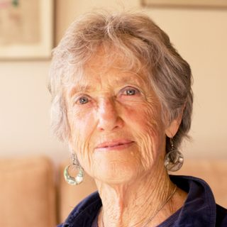
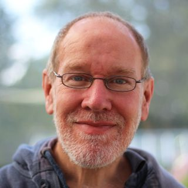

Sobre nosotros
Sostenemos la vida
Elara Social es la línea de trabajo comunitario de L’Espiral, que está en proceso de convertirse en cooperativa. Reconstruimos comunidad: creamos lugares donde la gente pueda encontrarse, escucharse y dar pasos concretos que cuiden la vida en el territorio.
Cuando el malestar o la preocupación se viven en soledad, cuesta sostenerlos y el vínculo con los demás se debilita. Por eso facilitamos prácticas y encuentros donde la gente puede reconocer lo que siente, sentirse acompañada y convertir la preocupación en esperanza activa: en gestos y acciones concretas.
En pocas palabras: pasamos del aislamiento al vínculo, y del malestar a la acción local.
Propósito
Existimos para tejer comunidad y apoyo mutuo.
- Porque muchas personas viven el malestar y la preocupación en soledad, y eso desgasta el vínculo con los demás.
- Porque sin vínculos y espacios seguros es difícil sostener los procesos personales y colectivos.
- Porque necesitamos prácticas y encuentros donde reconocer lo que sentimos y darle sentido, juntos.
- Porque así la preocupación se puede convertir en esperanza activa: en gestos y acciones concretas para cuidar la vida y la responsabilidad compartida.
-
Misión
Ofrecemos espacios e itinerarios para personas que quieren reconectar y construir comunidad: mini-rituales accesibles, recursos en línea, encuentros, talleres vivenciales y, si hace falta, acompañamiento individual. Sostenemos el proceso hasta que se convierte en acciones concretas en el territorio.
-
Visión
Queremos una red comunitaria que ponga la vida en el centro: que cada vez más personas participen en espacios de apoyo mutuo y transformen el malestar y el aislamiento en acciones locales concretas y sostenidas.
Para quién es y qué encontrarás
Para personas, grupos y entidades que viven malestar, soledad o cansancio, y necesitan más que herramientas puntuales: necesitan comunidad para no quedarse solas con lo que les pasa.
Qué encontrarás. Un camino para pasar del aislamiento al vínculo, y de ahí a pasos concretos con sentido. El malestar no se queda en palabras: se puede sostener y transformar en acciones realistas.
Qué nos hace diferentes. No es una experiencia de un solo día, sino un itinerario continuo: prácticas, encuentros y, si hace falta, acompañamiento individual, dentro de un marco cuidado de seguridad relacional y apoyo mutuo. Puedes participar poco a poco, para que lo que haces arraigue en tu territorio.
Nuestros valores (qué hacemos y qué no hacemos)
-
1. Cuidado de la vida
Hacemos: cuidamos límites y ritmos, y ponemos el bienestar de las personas y del territorio en el centro.
No hacemos: normalizar la sobrecarga, poner el resultado por delante de la salud, ni exigir más de lo que se puede sostener.
-
2. Presencia y conciencia
Hacemos: nos detenemos, escuchamos el cuerpo y el momento, y miramos con claridad antes de actuar.
No hacemos: funcionar con prisas, reaccionar desde el automatismo, ni imponer interpretaciones.
-
3. Apoyo mutuo e interdependencia
Hacemos: cooperamos, acogemos y hacemos posible que nadie atraviese en soledad lo que se puede sostener en comunidad.
No hacemos: individualizarlo todo, competir, ni desentendernos cuando alguien pide apoyo (dentro de lo que podemos ofrecer).
-
4. Acción concreta y responsabilidad compartida
Hacemos: traducimos lo que vivimos en pasos pequeños, realistas y revisables, y compartimos la responsabilidad para que el cambio sea posible y sostenido.
No hacemos: quedarnos en ideales abstractos, prometer lo que no se puede sostener, ni desvincularnos de lo que decidimos como comunidad.
Quiénes somos
El equipo de L’Espiral que acompaña a Elara Social.
-

Aleix Boronat
Director y cofundador de L’Espiral. Terapeuta Gestalt, formado en Psicología Humanista y en Psicoterapia Integrativa (programa SAT). Facilitador de El Trabajo que Reconecta, mentor y profesor de Mindfulness.
-

Anna Viñas
Cofundadora de L’Espiral. Terapeuta Gestalt (miembro adherente de la AETG), con formación en Psicoterapia Integrativa (programa SAT) y en psicología y psicopatología del posparto. Formada también en Yoga y Meditación para el Embarazo y el Posparto. Licenciada en Humanidades y Periodismo.
-
Montse Molina
Psicopedagoga y terapeuta Gestalt y corporal integrativa. Máster en Psicología Infanto-juvenil, y formada en Terapia Gestalt aplicada a la Infancia y la Adolescencia, en Terapia Sistémica Relacional y en Psicoterapia Integrativa (programa SAT). Formadora en el ámbito de la educación humanista.
-

Elvira Abad
Psicóloga sanitaria (col. 13460) y terapeuta Gestalt. Máster en Psicogerontología y Neurociencias Aplicadas. Coordinadora del Grupo de Trabajo de Personas Mayores del COPC (Área de Intervención Social) y docente de Atención a la Dependencia (SAD). Formada también en Risoterapia y Acompañamiento a la Muerte.
-
Cecilia Cristaldi
Psicóloga formada en terapia sistémica, Gestalt y coaching. Combina psicología y coaching, en sesiones individuales y en grupo, y acompaña a las personas para que reconozcan su potencial y avancen hacia sus objetivos.
Las raíces de El Trabajo que Reconecta
El Trabajo que Reconecta nació a finales de los años setenta de la mano de Joanna Macy, como respuesta a las crisis ecológicas, sociales y nucleares. Desde entonces se ha ido adaptando a las incertidumbres de cada momento y se ha extendido a decenas de países. Nosotros llegamos a él a través del libro Esperanza Activa, de Joanna Macy y Chris Johnstone, y queremos seguir llevándolo con gratitud y con cuidado.
-

Joanna Macy
Filósofa, autora y activista, conocida por su trabajo sobre ecología profunda, budismo comprometido y transformación social. Desde finales de los años setenta acompañó a muchas personas a no apartar la mirada del dolor por el mundo, y a encontrar en él la fuerza para actuar. De esta tarea nació El Trabajo que Reconecta.
Murió el 19 de julio de 2025. Nos deja una manera de mirar la vida y las crisis que nos tocan, y la certeza de que no tenemos que hacerlo solos. Le estamos profundamente agradecidos, y procuramos que su legado siga vivo en lo que hacemos.
-

Chris Johnstone
Médico y especialista en psicología de la resiliencia y el bienestar. Coescribió Esperanza Activa con Joanna Macy y ofrece un curso en línea en activehope.training.